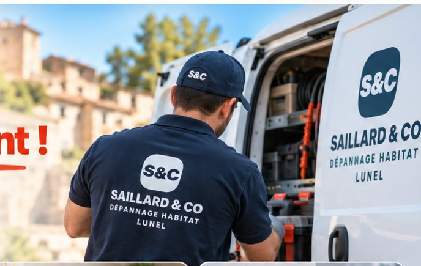

Une urgence ?On intervient rapidement !


Fuite d’eau
Fuite visible, raccord, robinetterie, alimentation ou recherche d’origine.

Chauffe-eau
Plus d’eau chaude, fuite, groupe de sécurité ou panne à diagnostiquer.

WC qui fuit
Chasse d’eau, remplissage permanent, mécanisme, flotteur ou raccord.
Petit dépannage électrique
Incident intérieur simple, appareillage ou recherche de panne selon diagnostic.
De l’urgence à la remise en état.
La première section est réservée aux dépannages urgents. Ici, on montre la suite : remise en état après sinistre, salle de bain et rénovation intérieure, sans répéter inutilement les mêmes services.

Dégâts des eaux
Après suppression de la cause, remise en état des supports : placo, plafond, enduit, peinture et sols.

Salle de bain
Réparation ponctuelle ou remise en état complète : plomberie, étanchéité, équipements et finitions.

Rénovation intérieure
Placo, peinture, parquet, cuisine et petits travaux multi-lots avec un seul interlocuteur.
Lunel au centre, Montpellier et Nîmes autour.

Lunel et communes proches restent le secteur principal. Montpellier et Nîmes sont étudiées selon le type d’intervention, la distance et les disponibilités.
Un artisan à proximité, réactif et polyvalent.
Vous échangez directement avec l’artisan.
Une proposition claire avant les travaux concernés.
Priorité aux situations qui ne peuvent pas attendre.
Un seul interlocuteur quand plusieurs corps de travaux sont nécessaires.
Avant de demander une intervention.
Intervenez-vous en urgence ?
Oui, selon la nature du problème et les disponibilités du moment. Pour une urgence, appelez directement.
Intervenez-vous à Montpellier et Nîmes ?
Oui, selon le type d’intervention, la distance et les disponibilités. Lunel et les communes proches restent le secteur principal.
Faites-vous la remise en état après un dégât des eaux ?
Oui, après traitement de la cause : placo, plafond, enduit, peinture, revêtement de sol et autres travaux intérieurs peuvent être étudiés.
Le devis est-il réalisé avant les travaux ?
Le principe est de présenter le devis avant les travaux concernés, sauf action immédiate convenue pour sécuriser une situation.